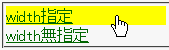
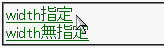

祖先要素でwidthプロパティやheightプロパティの値を具体的な値で明示したとき、ブロックボックス化したa要素でリンクとして機能する範囲が内容物のある部分のみになる。
<div style="width:10em;"> <a href="../winie.html" style="display:block;">width指定</a> </div> <div style="width:auto;"> <a href="../winie.html" style="display:block;">width無指定</a> </div>
a要素をブロック化しているので文字列から右に延長した領域でもリンクが機能するはずです。
Netscape7.1標準モード
WinIE6.0標準モード
a要素のwidthプロパティやheightプロパティを明示するとこのバグを回避できますが、WinIEバグ070が発生することがあります。
<div style="width:10em;"> <a href="../winie.html" style="display:block; width:9em;">width指定</a> </div>
または、a要素を相対配置してください。ただしIE5.5で不具合が発生することがあります。
<div style="width:10em;"> <a href="../winie.html" style="display:block; position:relative;">width指定</a> </div>
ただし、この策にも欠点があり (IE5.5 の場合・・・・IE6.0 では OK)
white-space: nowrap が指定してあると、ブロック化した a 要素の
頭が padding 分だけ描画されません。
どうしても white-space: nowrap を指定したい場合は
a 要素の親に padding、または border を指定します。
WinIE6.0の標準モードと互換モードで不具合の発生を確認しました。